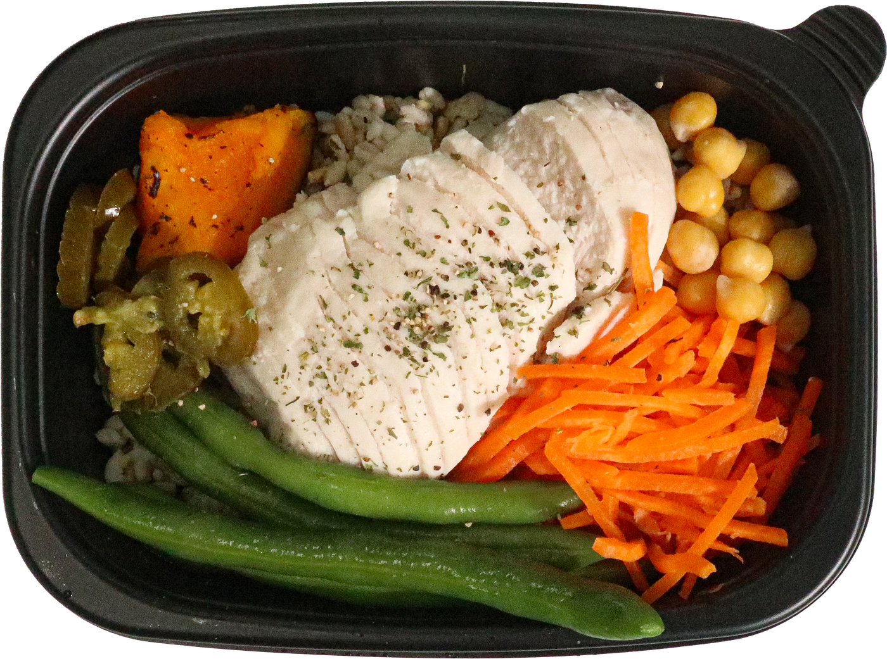

급찐급빠 골든타임 · 다음 한 끼
완벽한 한 끼로
바꿔보세요
명절 뒤 첫 식사, 오늘의 선택부터 다시 시작해요.
왜 지금이 골든타임일까요?
명절 식사는 끝났고,
다음 한 끼는 지금
고를 수 있으니까.
연휴 뒤 일상으로 돌아오는 첫 식사부터
식단을 다시 정할 수 있습니다.

밥·닭가슴살·채소가 담긴 한 팩.
단백질 50g · 당류 1g · 총중량 420g
*오리지널 L 영양성분표 기준: 단백질 50.1g · 당류 0.8g · 총중량 420g